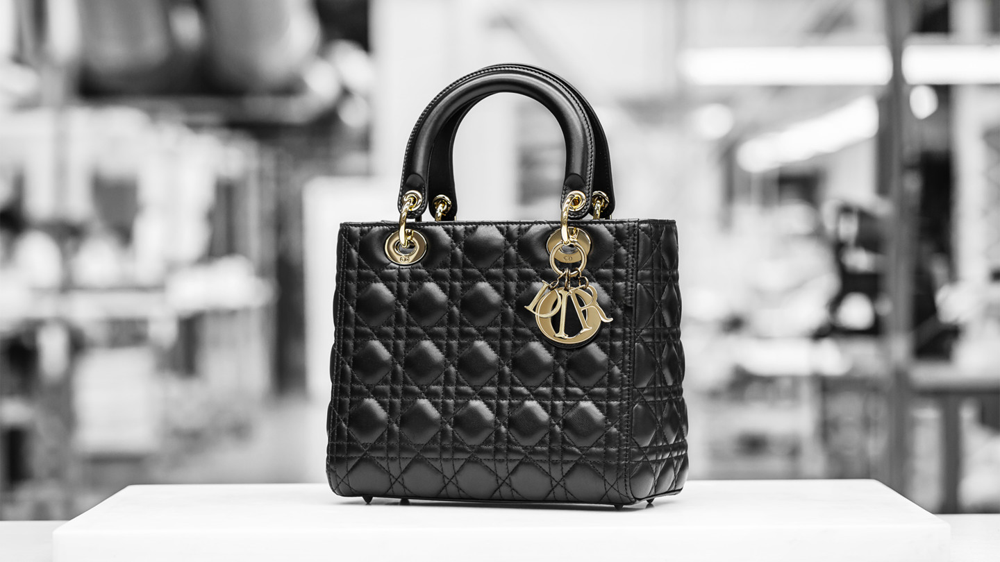

- Lady Dior
- Dior Caro
- Dior Bobby East-West
- Dior Essential
- Saddle
- Lady D-Joy
- Dior Vibe
- Dior Book Tote
- Dior D-Lite
Lady dior 디올 레이디백
The Lady Dior handbag is a House classic defined by its Cannage topstitching, 'D.I.O.R.' charm and structured silhouette. The signature design is revisited every season by Creative Director Maria Grazia Chiuri, with the collection offering a myriad of silhouettes, materials and palettes.

LADY DIOR, A TRUE STYLE ICON
Equal parts symbol and legend, the Lady Dior made its début on Lady Diana’s arm, launching from there into its extraordinary destiny. An architectural homage to the House’s excellence, this iconic cannage creation reinvents itself through the collections in a multitude of colors, sizes, and ever-exceptional materials.